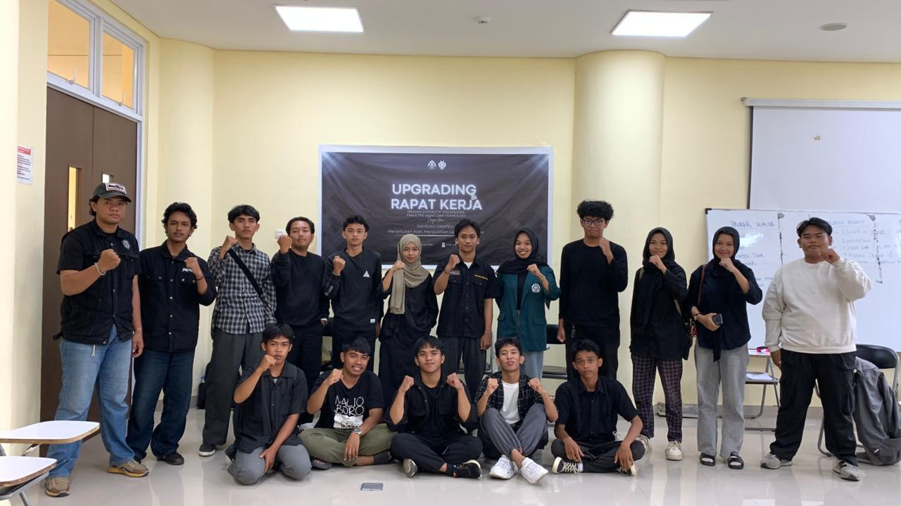

Keberanian kedua saya berada di organisasi ini, dikelilingi orang orang hebat yang bahkan belum pernah dekat dengan mereka, namun ternyata DEMA menjadi tempat yang cukup nyaman buat saya, walau anggotanya kurang banyak, namun itu tidak menghalangi DEMA FSAINTEK untuk berjalan terus.
Saya bahkan turut andil dalam kepanitiaan:
Dengan pengalaman yang kurang, saya pernah:
Untuk kepengurusan selanjutnya dan untuk DEMA: